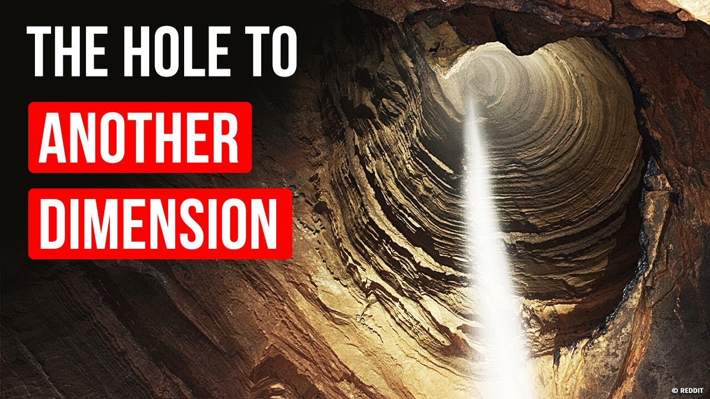

Pit Theories and Conspiricies
The items listed below are unconfirmed and unproven. Please take caution while reading.
Dimensional Holes
One theory that a multitude of PCU researchers have deducted is that these bottomless pits are actually gateways the poke through the fabric of reality to diffrent points in time, or even diffrent universes entirely. While this theory remains unfounded, some evidence does point to this possibility. The main piece of evidence is the appearence of items that do not belong. One such example pertains to the first discovery of a bottomless pit. Elijah Fleming is credited as the first civilian to discover a pit in northern Tennessee back in 1976. Unfortunatly Mr. Fleming went missing soon after making his report. It was theorized that he fell into the pit and perished. Recently however in 2006 after a new pit occurance in eastern Russia a bag with the name "Elijah Fleming" was found. This topic is still under debate however and further exploration is needed.
The Prison Theory
A conspiricy that has become popular amoung many active minded researchers is the possibility that these pits could be a type of "Prison" is a loose term. The idea states that our planet was used as a shakle to lock up a powerful being(s). The general idea connecting the pits to this idea is that they are weak points appearing in the cell created for this creature. While outlandish this theory still deserves consideration. However for the good of everything, we can only hope this is not the case. This topic is still under debate however and further exploration is needed.